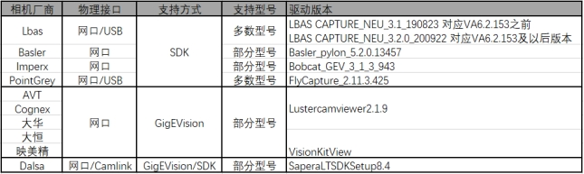

详细信息可以参考：附录/支持2D相机列表。这里截取部分以示说明
2D相机
| 相机厂商 | 型号 | 支持方式 | 分辨率 | 黑白/彩色 | 帧率 |
|---|---|---|---|---|---|
| LUSTER | LBAS-GE/10GE系列LBAS-U3系列 | SDK | 0.3-65M | Mono/Color | NA |
| LUSTER | LBAS-GExx-02系列 | SDK | 5M/12M/25M | Mono/Color | NA |
| LUSTER | MO60 | CameraLink SDK | 12000 x 5000 | Mono | 4.9 fps |
| Basler | acA2500-14gm | SDK | 2592 x 1944 | Mono | 14 fps |
| Basler | acA3800-10gc | SDK | 3840 x 2748 | Color | 10 fps |
| Basler | a2A4504-5gm | SDK | 4504 x 4504 | Mono | 5 fps |
| COGNEX | CAM-CIC-5000-24-G | GigE Vision | 2448 X 2048 | Mono | 24 fps |
| COGNEX | CAM-CIC-5000R-14-G | GigE Vision | 2592 X 1944 | Color | 14 fps |
| AVT | Mako G-503B | GigE Vision | 2592 x 1944 | Mono | 14 fps |
| AVT | Manta G-895B ASG | GigE Vision | 4112 x 2176 | Mono | 13.4 fps |
| AVT | Stingray F-504B | SDK | 2452 x 2056 | Mono | 9 fps |
| AVT | Guppy PRO F-125C | SDK | 1292 x 964 | Color | 31 fps |
| HIKROBOT | MV-CA003-20GC | SDK | 672 X 512 | Color | 20 fps |
| Dahua | A5B51MG4 | SDK | 5120 x 5120 | Mono | 4 fps |
| Dahua | A5B57MG200 | SDK | 5120 x 5120 | Mono | 4 fps |
| Dahua | AX7Q00MK470 | CameraLink SDK | 14160 x 10640 | Mono | 5 fps |
| Daheng | MER-500-14GM | GigE Vision | 2592 x 1944 | Mono | 14 fps |
| FLIR | BFLY-PGE-50A2M-CS | SDK | 2592 x 1944 | Mono | 13 fps |
| FLIR | BFLY-PGE-13S2M-CS | SDK | 1288 x 964 | Mono | 30 fps |
| FLIR | BFLY-PGE-50H5M-C | SDK | 2448 x 2048 | Mono | 8 fps |
| FLIR | BFLY-PGE-20E4M-CS | SDK | 1600 x 1200 | Mono | 47 fps |
| FLIR | FL3-GE-50S5M-CS | SDK | 2448 x 2048 | Mono | 8 fps |
| Imperx | GEV-B6620M-TF097 | SDK | 6576 x 4384 | Mono | 2.4 fps |
| The Imageing Source | DMK 33GJ003e | GigE Vision | 3856 x 2764 | Mono | 11 fps |
| Illunis | RMOD-71-TEC Mono CL | CameraLink SDK | 10000 x 7094 | Mono | 4.2 fps |
| Illunis | CMV-120 Mono CL | CameraLink SDK | 13272 x 9176 | Mono | 5.5 fps |
| Teledyne Dalsa | Nano G3-GC10-C1280 | GigE Vision | 1280 x 1024 | Color | 72 fps |
| LUSTER | SF6000-CL08K-90M-00 | CameraLink SDK | 8K | Mono | 90KHz |
| Teledyne Dalsa | LA-CM-16K07A | CameraLink SDK | 16K | Mono | 71KHz |
| Teledyne Dalsa | LA-CM-08K08A | CameraLink SDK | 8K | Mono | 80KHz |
| Teledyne Dalsa | P4-CM-08K070 | CameraLink SDK | 8k | Mono | 70KHz |
| Teledyne Dalsa | LA-GM-04K08A | CameraLink SDK | 4k | Mono | 80KHz |
| Teledyne Dalsa | ML-HM-16K30H | CameraLinkHS SDK | 16k | Mono | 300KHz |
采集卡
| Teledyne Dalsa | Xtium2-CLHS_PX8 |
|---|---|
| Teledyne Dalsa | Xcelera-CL_PX4 |
| Teledyne Dalsa | Xtium-CLHS_PX8 |
| Teledyne Dalsa | Xtium-CL_MX4 |
说明
若待使用的相机未在支持清单中，请按照现场实际使用状况将相同数量的相机、电源线、网线等> 成套寄回北京测试部，进行验证。
目前VISIONAssembly（后文简称VA）软件中支持了各个厂商的相机，下文将对各种相机的兼容情况做以下说明。
VA软件中现在支持的相机种类如图所示，目前各个厂商的相机主要是支持网口类型的部分型号相机，其中Teledyne Dalsa还支持CameraLink接口的部分型号（大面阵）相机：

注意
支持方式为SDK的相机，如LBAS、Basler、Imperx等需要安装相对应的相机驱动；
支持方式为GigEVision协议的相机，如AVT、Cognex、大华、大恒、映美精、Teledyne Dalsa相机，不强制要求安装相机自带驱动，若有查看/修改参数的需求，可以使用LusterCamViewer软件（免安装），现在已经给出定制版在实验局验证VISIONKit，待验证通过后会转到各个主版本中。
- LBAS CAPTURE3.1对应VA的版本是6.2.153之前，LBAS CAPTURE3.2对应的是6.2.153到6.3.200.255，LBAS CAPTURE3.3对应6.3.200.255以后版本。